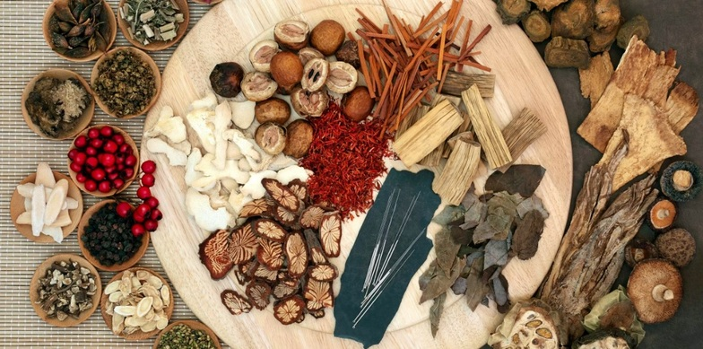

Nurturing Beauty from Within: Exploring the Wonders of 'Herbal Radiance Tea'

In a bustling world where self-care and wellness take center stage, the quest for natural
beauty has led many to seek ancient remedies and timeless traditions. 'Herbal Radiance
Tea,' or "Trà Dưỡng Nhan," is one such hidden gem, offering a unique blend of herbs
meticulously crafted to nourish your inner beauty and enhance your radiance from within.
"Herbal Radiance Tea" is a delightful fusion of delicate flowers, succulent fruits, and
nurturing leaves, each meticulously chosen for its remarkable role in elevating your
natural allure. This tea is not just about indulging in a soothing beverage; it's a
journey to connect with age-old wisdom and the rich tapestry of traditions that surround
it.
In the world of culinary diversity, sushi has long held a special place as a beloved
delicacy. It's a cuisine that marries the artistry of food preparation with the
simplicity
of fresh, quality ingredients. As we embark on an exciting project, we are thrilled to
announce our partnership with Bento Sushi to bring this beloved cuisine to your local
Walmart East Hill and Sobeys Forest Lawn locations.
A Beauty Secret Cherished by Royalty
The story of "Herbal Radiance Tea" is steeped in history. It was once a well-kept beauty
secret of royal courts, a treasured elixir passed down through generations. These
ancient queens and empresses understood the power of nature in enhancing beauty, and
this knowledge has been preserved for modern seekers of wellness and radiance.
A Treasure for Modern Women
Today, "Herbal Radiance Tea" has transcended the confines of history to become a beloved
treasure for women of all walks of life. Its benefits extend far beyond skin-deep
beauty, offering a holistic approach to well-being. As we delve into its composition, we
discover a world of natural ingredients that cater to various aspects of health and
radiance.
Skincare Harmony
The carefully selected herbs in "Herbal Radiance Tea" are known to promote healthy and
radiant skin. From reducing inflammation to combating acne, they work in harmony to
address common skincare concerns, offering you a natural glow that can't be replicated
by cosmetics alone.
Hormonal Balance
Balancing hormones is essential for overall health and well-being. The herbal components
in the tea are known to have a positive impact on hormonal balance, making it a valuable
ally for women seeking equilibrium in their bodies.
Embracing Tradition in a Modern World
In a fast-paced world, it's easy to overlook the wisdom of our ancestors. "Herbal
Radiance Tea" invites you to reconnect with time-honored traditions and rituals. With
every sip, you are not just enjoying a delicious beverage; you're savoring a piece of
history, connecting with cultures that understood the secrets of beauty from within.
"Herbal Radiance Tea" is a testament to the age-old idea that true radiance comes from
nourishing the body and soul. It's a bridge between ancient wisdom and modern
appreciation, offering a holistic approach to well-being.
So, why wait? Embark on this journey with us and unlock the inner beauty that has always
been within you. "Herbal Radiance Tea" is more than a beverage; it's a gateway to a more
radiant and balanced you. Join us in nurturing your natural allure, sip by sip, and let
the ancient secrets of beauty unfold in your life.